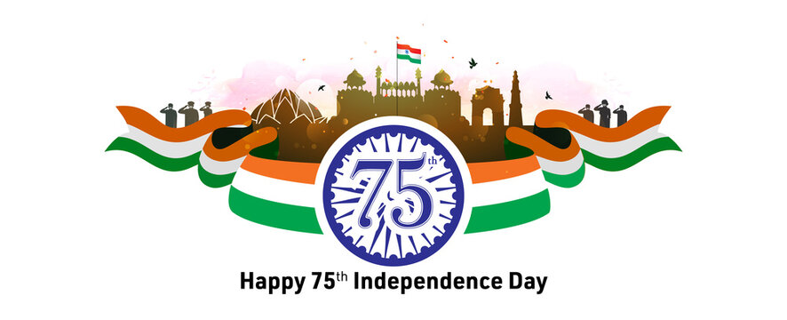

Gandhi organized Indian resistance, fought anti-Indian legislation in the courts and led large protests against the colonial government. Along the way, he developed a public persona and a philosophy of truth-focused, non-violent non-cooperation he called Satyagraha.
ABOUT INDIA
ABOUT INDIA'S INDIPENDENCE